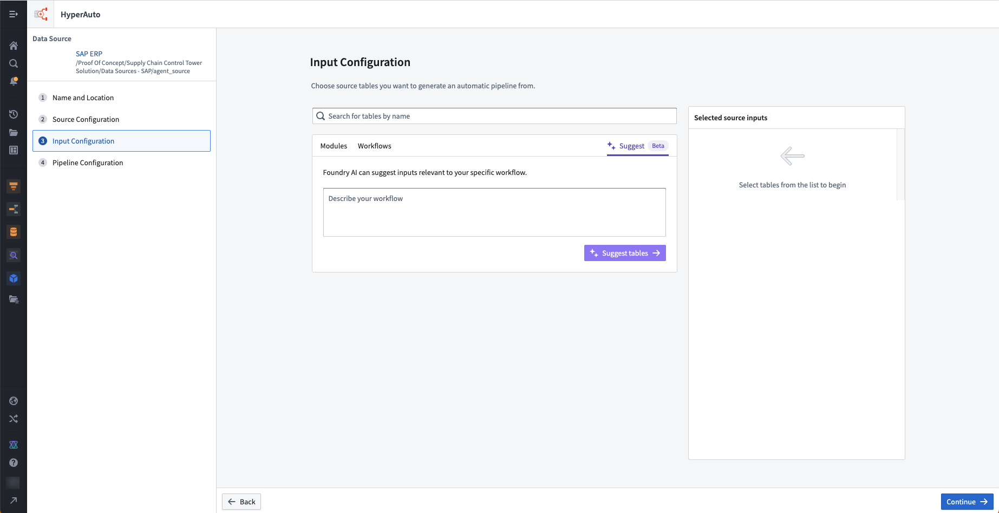

You can use the following AIP-powered feature in HyperAuto.
AIP Assist can suggest input tables within the corresponding source (and sub-system) that are relevant to the workflow, including an explanation as to why each input is relevant and how it can be used.
To access this feature, navigate to the Input Configuration page and select Suggest, then enter a comprehensive description of a workflow as a prompt for AIP Assist.
